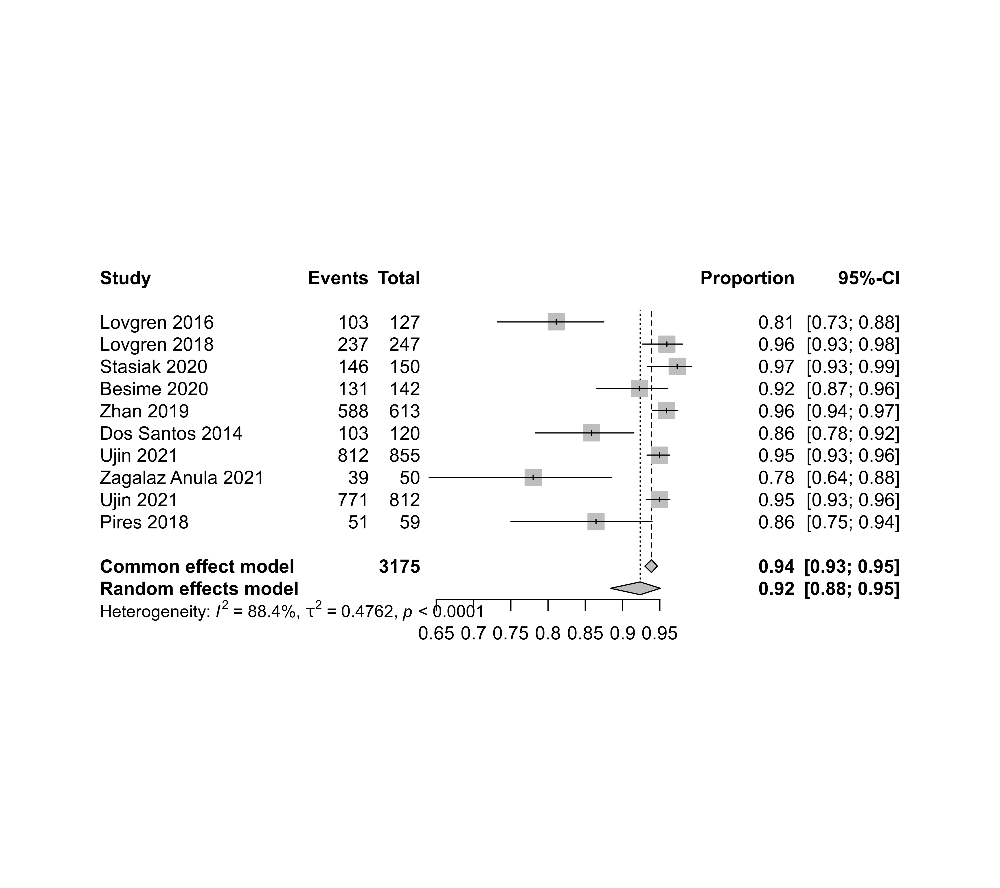
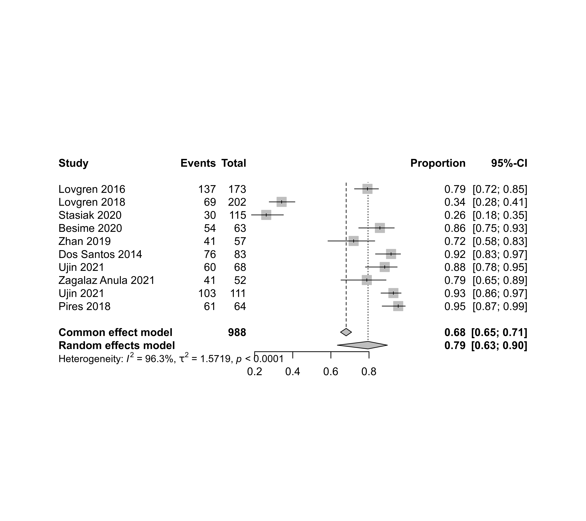

dat.rivera2025.RdStudies evaluating the diagnostic accuracy of the IAF and 3Q-TMD instruments based on the reference tests RDC and DC-TMD for the diagnosis of temporomandibular disorders.
dat.rivera2025The data frame contains the following columns:
| Author | character | study author(s) |
| Year | integer | year of the study |
| Title | character | title of the article |
| DOI | character | DOI for the article |
| TP | integer | number of true positives |
| FP | integer | number of false positives |
| FN | integer | number of false negatives |
| TN | integer | number of true negatives |
| Sensitivity | numeric | sensitivity |
| Specificity | numeric | specificity |
| PPV | numeric | positive predictive value |
| NPV | numeric | negative predictive value |
| Sample.size | integer | sample size |
| n1 | integer | number of people with the disease |
| n2 | integer | number of people without the disease |
| Prevalence | numeric | prevalence |
| AUC | numeric | area under the curve |
| SampleID | character | sample identifier |
Results of 10 studies that evaluated the diagnostic accuracy of the IAF and 3Q-TMD instruments based on the reference tests RDC and DC-TMD were included. The search period ranged from 1992 to April 2022 in six electronic databases. Two independent reviewers selected the studies. Risk of bias and applicability were assessed using the QUADAS 2 instrument.
Rivera, Hugo Daniel; Álvarez-Vaz, Ramón, 2025, "Conjunto de datos de: Comparación de dos pruebas diagnósticas para la detección de trastornos témporomandibulares. Una revisión sistemática y metaanálisis.", https://doi.org/10.60895/redata/YIEGLZ, Repositorio de datos abiertos de investigación de Uruguay, V1
Rivera, H. D., Rodríguez, C. I., Álvarez Vaz, R., & Kreiner, M. (2025). Comparison of two diagnostic tests for the detection of temporomandibular disorders: A systematic review and meta-analysis. Odontoestomatología, 27(45). https://doi.org/10.22592/ode2025n45e338
medicine, dentistry, diagnostic accuracy studies
### copy data into 'dat' and examine data
dat <- dat.rivera2025
dat
#> Author Year
#> 1 Lovgren 2016
#> 2 Lovgren 2018
#> 3 Stasiak 2020
#> 4 Besime 2020
#> 5 Zhan 2019
#> 6 Dos Santos 2014
#> 7 Ujin 2021
#> 8 Zagalaz Anula 2021
#> 9 Ujin 2021
#> 10 Pires 2018
#> Title
#> 1 Validity of three screening questions (3Q/TMD) in relation to the DC/TMD
#> 2 Diagnostic accuracy of three screening questions (3Q/TMD) in relation to the DC/TMD in a specialized orofacial pain clinic
#> 3 TMD diagnosis: Sensitivity and specificity of the Fonseca Anamnestic Index
#> 4 The accuracy and reliability of the Turkish version of the Fonseca anamnestic index in temporomandibular disorders
#> 5 Psychometric evaluation of the Chinese version of the Fonseca anamnestic index for temporomandibular disorders
#> 6 Accuracy of the Fonseca anamnestic index in the identification of myogenous temporomandibular disorder in female community cases
#> 7 Accuracy of the Fonseca Anamnestic Index for identifying pain-related and/or intra-articular Temporomandibular Disorders
#> 8 The Short Form of the Fonseca Anamnestic Index for the Screening of Temporomandibular Disorders: Validity and Reliability in a Spanish-Speaking Population
#> 9 Diagnostic accuracy of the short-form Fonseca Anamnestic Index in relation to the Diagnostic Criteria for Temporomandibular Disorders
#> 10 Analysis of the accuracy and reliability of the Short-Form Fonseca Anamnestic Index in the diagnosis of myogenous temporomandibular disorder in women
#> DOI TP FP FN TN Sensitivity Specificity PPV NPV Sample.size n1
#> 1 10.1111/joor.12428 103 36 24 137 0.81 0.79 0.74 0.84 300 127
#> 2 10.1080/00016357.2018.1439528 237 133 10 69 0.96 0.34 0.64 0.86 449 247
#> 3 10.1080/08869634.2020.1839724 146 85 4 30 0.97 0.26 0.63 0.86 265 150
#> 4 10.1080/08869634.2020.1812808 131 9 11 54 0.94 0.83 0.94 0.83 205 142
#> 5 10.1111/joor.12893 588 16 25 41 0.96 0.72 0.97 0.62 670 613
#> 6 10.1016/j.jbmt.2014.08.001 103 7 17 76 0.86 0.92 0.94 0.83 203 120
#> 7 10.1080/08869634.2021.1954375 812 8 43 60 0.95 0.88 0.99 0.51 923 855
#> 8 10.3390/jcm10245858 39 11 11 41 0.78 0.79 0.78 0.79 102 50
#> 9 10.1016/j.prosdent.2021.02.016 771 8 41 103 0.95 0.93 0.99 0.42 923 812
#> 10 10.1016/j.bjpt.2018.02.003 51 3 8 61 0.86 0.95 0.94 0.89 123 59
#> n2 Prevalence AUC SampleID
#> 1 173 0.425 NA Lovgren2016
#> 2 202 0.550 NA Lovgren2018
#> 3 115 0.565 NA Stasiak2020
#> 4 63 0.725 0.93 Besime2020
#> 5 57 0.915 NA Zhan2019
#> 6 83 0.593 0.94 Dos Santos2014
#> 7 68 0.926 0.96 Ujin2021
#> 8 52 0.488 0.85 ZagalazAnula2021
#> 9 111 0.879 0.97 Ujin2021
#> 10 64 0.477 0.97 Pires2018
suppressPackageStartupMessages(library(meta))
### sensitivity
round(dat$TP / dat$n1, 4)
#> [1] 0.8110 0.9595 0.9733 0.9225 0.9592 0.8583 0.9497 0.7800 0.9495 0.8644
report1 <- metaprop(TP, n1, data=dat, common=TRUE, random=TRUE, studlab=paste(Author, Year))
report1
#> Number of studies: k = 10
#> Number of observations: o = 3175
#> Number of events: e = 2981
#>
#> proportion 95%-CI
#> Common effect model 0.939 [0.930; 0.947]
#> Random effects model 0.924 [0.884; 0.951]
#>
#> Quantifying heterogeneity (with 95%-CIs):
#> tau^2 = 0.4762; tau = 0.6900; I^2 = 88.4% [80.7%; 93.0%]; H = 2.93 [2.28; 3.78]
#>
#> Test of heterogeneity:
#> Q d.f. p-value
#> Wald 77.44 9 < 0.0001
#> LRT 67.25 9 < 0.0001
#>
#> Details of meta-analysis methods:
#> - Random intercept logistic regression model
#> - Maximum-likelihood estimator for tau^2
#> - Calculation of I^2 based on Q
#> - Logit transformation
summary(report1)
#> proportion 95%-CI
#> Lovgren 2016 0.811 [0.732; 0.875]
#> Lovgren 2018 0.960 [0.927; 0.980]
#> Stasiak 2020 0.973 [0.933; 0.993]
#> Besime 2020 0.923 [0.866; 0.961]
#> Zhan 2019 0.959 [0.940; 0.973]
#> Dos Santos 2014 0.858 [0.783; 0.915]
#> Ujin 2021 0.950 [0.933; 0.963]
#> Zagalaz Anula 2021 0.780 [0.640; 0.885]
#> Ujin 2021 0.950 [0.932; 0.964]
#> Pires 2018 0.864 [0.750; 0.940]
#>
#> Number of studies: k = 10
#> Number of observations: o = 3175
#> Number of events: e = 2981
#>
#> proportion 95%-CI
#> Common effect model 0.939 [0.930; 0.947]
#> Random effects model 0.924 [0.884; 0.951]
#>
#> Quantifying heterogeneity (with 95%-CIs):
#> tau^2 = 0.4762; tau = 0.6900; I^2 = 88.4% [80.7%; 93.0%]; H = 2.93 [2.28; 3.78]
#>
#> Test of heterogeneity:
#> Q d.f. p-value
#> Wald 77.44 9 < 0.0001
#> LRT 67.25 9 < 0.0001
#>
#> Details of meta-analysis methods:
#> - Random intercept logistic regression model
#> - Maximum-likelihood estimator for tau^2
#> - Calculation of I^2 based on Q
#> - Logit transformation
#> - Clopper-Pearson confidence interval for individual studies
forest(report1)

### specificity
round(dat$TN / dat$n2, 4)
#> [1] 0.7919 0.3416 0.2609 0.8571 0.7193 0.9157 0.8824 0.7885 0.9279 0.9531
report2 <- metaprop(TN, n2, data=dat, common=TRUE, random=TRUE, studlab=paste(Author, Year))
summary(report2)
#> proportion 95%-CI
#> Lovgren 2016 0.792 [0.724; 0.850]
#> Lovgren 2018 0.342 [0.276; 0.411]
#> Stasiak 2020 0.261 [0.183; 0.351]
#> Besime 2020 0.857 [0.746; 0.933]
#> Zhan 2019 0.719 [0.585; 0.830]
#> Dos Santos 2014 0.916 [0.834; 0.965]
#> Ujin 2021 0.882 [0.781; 0.948]
#> Zagalaz Anula 2021 0.788 [0.653; 0.889]
#> Ujin 2021 0.928 [0.863; 0.968]
#> Pires 2018 0.953 [0.869; 0.990]
#>
#> Number of studies: k = 10
#> Number of observations: o = 988
#> Number of events: e = 672
#>
#> proportion 95%-CI
#> Common effect model 0.680 [0.650; 0.709]
#> Random effects model 0.795 [0.634; 0.897]
#>
#> Quantifying heterogeneity (with 95%-CIs):
#> tau^2 = 1.5719; tau = 1.2537; I^2 = 96.3% [94.7%; 97.4%]; H = 5.19 [4.33; 6.22]
#>
#> Test of heterogeneity:
#> Q d.f. p-value
#> Wald 242.49 9 < 0.0001
#> LRT 318.10 9 < 0.0001
#>
#> Details of meta-analysis methods:
#> - Random intercept logistic regression model
#> - Maximum-likelihood estimator for tau^2
#> - Calculation of I^2 based on Q
#> - Logit transformation
#> - Clopper-Pearson confidence interval for individual studies
forest(report2)

### diagnostic odds ratio
report3 <- metabin(TP, n1, n2-TN, n2, data=dat, sm="OR",common=FALSE, random=TRUE,
studlab=paste(Author, Year), allstudies=TRUE)
summary(report3)
#> OR 95%-CI %W(random)
#> Lovgren 2016 16.332 [ 9.178; 29.062] 11.0
#> Lovgren 2018 12.295 [ 6.128; 24.670] 10.7
#> Stasiak 2020 12.882 [ 4.388; 37.821] 9.3
#> Besime 2020 71.455 [ 28.018; 182.233] 9.8
#> Zhan 2019 60.270 [ 29.844; 121.713] 10.6
#> Dos Santos 2014 65.782 [ 25.987; 166.517] 9.9
#> Ujin 2021 141.628 [ 63.706; 314.859] 10.3
#> Zagalaz Anula 2021 13.215 [ 5.143; 33.957] 9.8
#> Ujin 2021 242.113 [110.437; 530.786] 10.4
#> Pires 2018 129.625 [ 32.675; 514.232] 8.2
#>
#> Number of studies: k = 10
#> Number of observations: o = 4163 (o.e = 3175, o.c = 988)
#> Number of events: e = 3297
#>
#> OR 95%-CI z p-value
#> Random effects model 45.300 [22.409; 91.575] 10.62 < 0.0001
#>
#> Quantifying heterogeneity (with 95%-CIs):
#> tau^2 = 1.0834 [0.4077; 4.0424]; tau = 1.0409 [0.6385; 2.0106]
#> I^2 = 86.4% [77.0%; 92.0%]; H = 2.72 [2.08; 3.54]
#>
#> Test of heterogeneity:
#> Q d.f. p-value
#> 66.35 9 < 0.0001
#>
#> Details of meta-analysis methods:
#> - Inverse variance method
#> - Restricted maximum-likelihood estimator for tau^2
#> - Q-Profile method for confidence interval of tau^2 and tau
#> - Calculation of I^2 based on Q